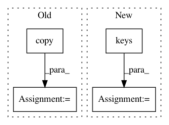

cf4b1078573d69bbb5c511a22300f42ff2b0da76,hyperspy/samfire.py,Samfire,_swap_dict_and_model,#Samfire#Any#Any#Any#,489
Before Change
d_ind = tuple([0 for _ in dic["chisq.data"].shape])
self.model.chisq.data[m_ind], dic["chisq.data"] = dic[
"chisq.data"].copy(), self.model.chisq.data[m_ind].copy()
self.model.dof.data[m_ind], dic["dof.data"] = dic[
"dof.data"].copy(), self.model.dof.data[m_ind].copy()
for comp_name, comp in dic["components"].items():
// only active components are sent
if self.model[comp_name].active_is_multidimensional:
After Change
if d_ind is None:
d_ind = tuple([0 for _ in dict_["dof.data"].shape])
m = self.model
for k in dict_.keys():
if k.endswith(".data"):
item = k[:-5]
getattr(m, item).data[m_ind], dict_[k] = \
dict_[k].copy(), getattr(m, item).data[m_ind].copy()
// self.model.dof.data[m_ind], dict_["dof.data"] = dict_[
// "dof.data"].copy(), self.model.dof.data[m_ind].copy()
// if "chisq.data" in dict_:
// self.model.chisq.data[m_ind], dict_["chisq.data"] = dict_[
// "chisq.data"].copy(), self.model.chisq.data[m_ind].copy()
// if "corr.data" in dict_:
// self.model.corr.data[m_ind], dict_["corr.data"] = dict_[
// "corr.data"].copy(), self.model.corr.data[m_ind].copy()
for comp_name, comp in dict_["components"].items():
// only active components are sent
if self.model[comp_name].active_is_multidimensional:
self.model[comp_name]._active_array[m_ind] = True
In pattern: SUPERPATTERN
Frequency: 4
Non-data size: 4
Instances
Project Name: hyperspy/hyperspy
Commit Name: cf4b1078573d69bbb5c511a22300f42ff2b0da76
Time: 2016-11-29
Author: t.ostasevicius@gmail.com
File Name: hyperspy/samfire.py
Class Name: Samfire
Method Name: _swap_dict_and_model
Project Name: flow-project/flow
Commit Name: 9f60f957cd7be8f9c17c99b4c90d764e5898e989
Time: 2019-01-15
Author: eugenevinitsky@users.noreply.github.com
File Name: flow/multiagent_envs/multiagent_env.py
Class Name: MultiEnv
Method Name: step
Project Name: Netflix/vmaf
Commit Name: 4b8fac0f31860b19efdda701920abc60991f2d1f
Time: 2020-11-12
Author: kswanson@netflix.com
File Name: python/vmaf/core/quality_runner.py
Class Name: VmafossExecQualityRunner
Method Name: _get_quality_scores
Project Name: masa-su/pixyz
Commit Name: 161ae41bebc73c146627169f761e3c4ddf83e5d4
Time: 2020-10-26
Author: kaneko@weblab.t.u-tokyo.ac.jp
File Name: pixyz/losses/entropy.py
Class Name: AnalyticalEntropy
Method Name: __init__